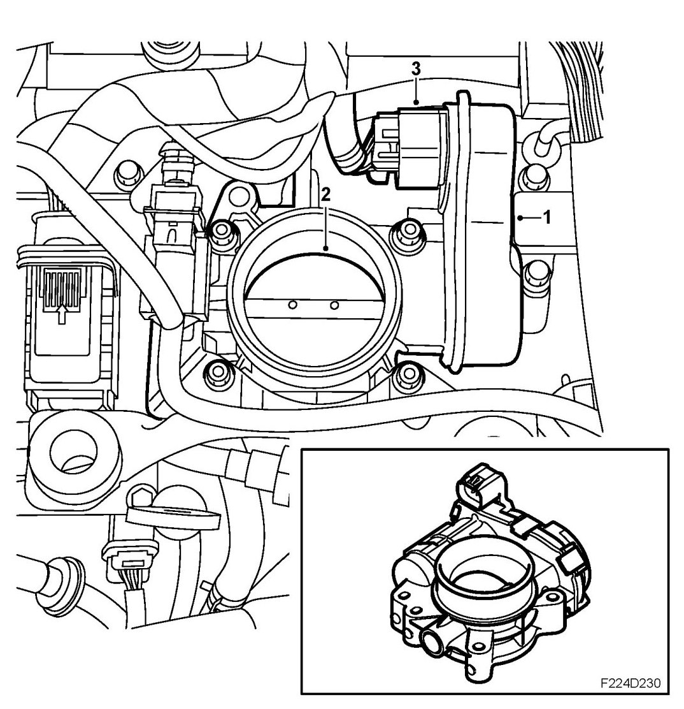
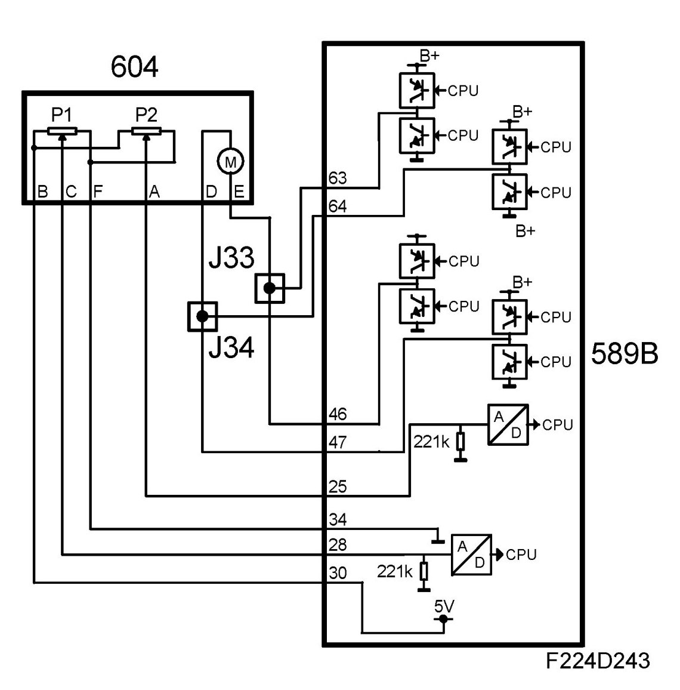
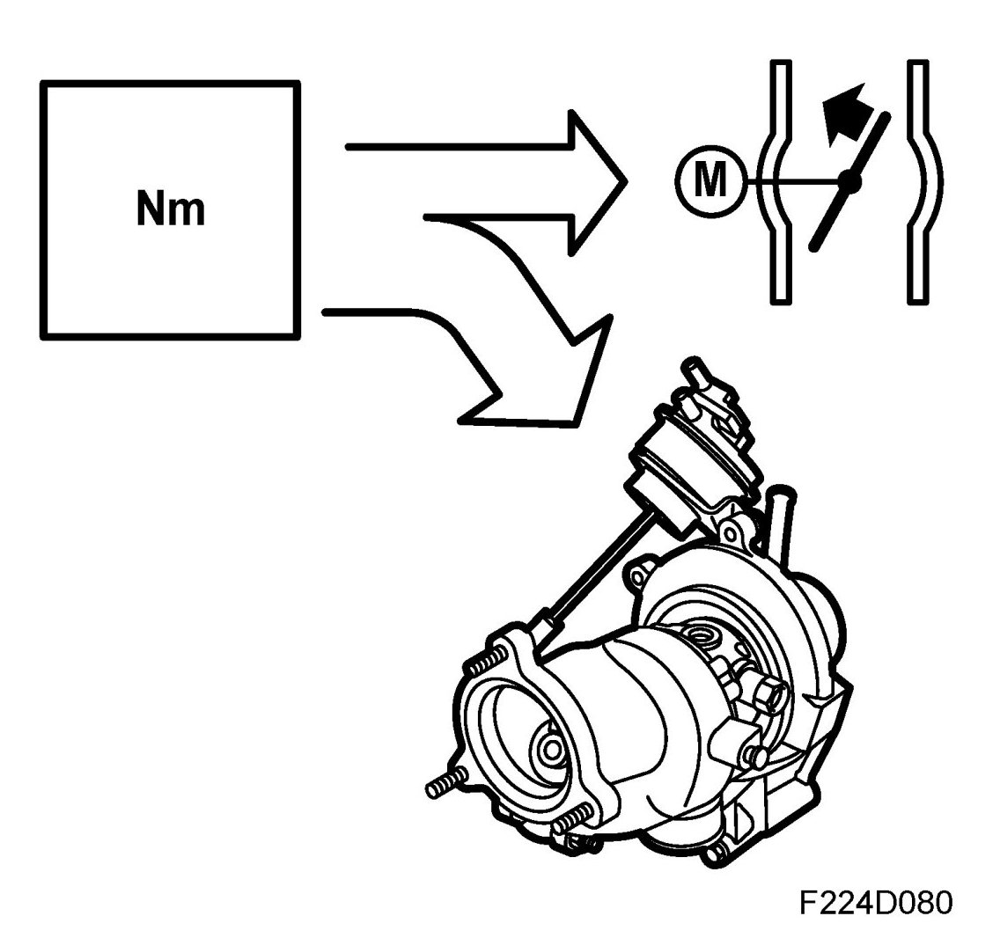

Throttle Adjustment
Throttle Adjustment
1. Throttle motor

2. Throttle disc
3. Connector
The throttle disc is turned by a DC motor via a reduction gear. The motor is supplied from ECM with a PWM signal from pins 46(B), 63(B) and 47(B), 64(B). ECM can turn the throttle disc in both directions, i.e. open and close. A spring strives to keep the throttle slightly open.

When the throttle control goes into limp-home mode then it is this position that determines the throttle area and thereby controls the air mass/combustion that can enter the engine. Fuel shut-off and ignition timing are used as control instruments in order to control the engine torque. The idling speed is around 900 rpm. The engine will run erratically with low loads due to fuel shut-off. The car can still be driven but performance will be impaired.
Two throttle position sensors are connected to the shaft. The sensors comprise potentiometers supplied with 5V from ECM pins 30(B) and 31(B) and are grounded to ECM pins 34(B) and 35(B).
The voltage from potentiometer 1 is connected to ECM pin 28(B) and increases as the throttle opens (increased area). The voltage from potentiometer 2 is connected to ECM pin 25(B) and drops as the throttle opens (increased area). The sum of the two voltages is therefore always 5V.
The value from potentiometer 1 is used by ECM to detect the current throttle opening (area).
The result of torque control is converted to air mass/combustion. Throttle control converts it to a certain requested value for throttle position sensor 1 and compares this requested value with the current value of the sensor. The difference (deviation) will give rise to a throttle motor PWM of a magnitude and polarity that will turn the throttle until the desired value (area) is obtained. If a major fault arises in the throttle control then it will be shut down and the throttle will go to a position of rest that is determined by a spring. Engine torque can now only be regulated using fuel shut-off and ignition timing.

When the system's total requested air mass/combustion (engine torque) has been calculated then firstly the throttle and secondly, if necessary (high engine load), turbo control will have to realize it.
Requested air mass/combustion is corrected with the density of the charge air (air before throttle). Thinner air (lower density) gives a greater throttle opening angle (larger area) so that the same air mass/combustion is obtained as with normal air density.
Air density is calculated using the charge air absolute pressure and the temperature.
This value is converted to a certain requested value for throttle position sensor 1 and compares this requested value with the current value of the sensor. The difference (deviation) gives rise to a throttle motor PWM of a magnitude and polarity that will turn the throttle until the desired value (area) is obtained.
The PWM value is finely adjusted if necessary so that the requested position agrees with the current one, i.e. zero deviation.
If the requested air mass/combustion is too high to be treated (attained) only by throttle control then the excess (difference) will be handled by turbo control.
If a safety-related fault should arise in the throttle control then it will go into limp-home mode. The Check Engine symbol will come on immediately and a message will be displayed on SID informing that the engine is running with limited performance.
NOTE: It is normal that the throttle is not fully open even though the accelerator pedal is fully depressed.